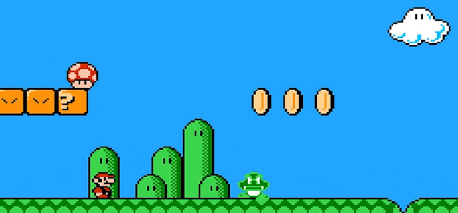
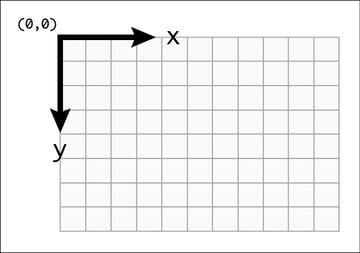

Canvas
What Canvas Can Do
How Canvas Works
The canvas element is declared using the tag
Attributes and Functions
Attributes:
width="300"
height="150"
Functions:
toDataURL(type)
getContext(type)
Styles
#canvas1 {
border: 1px solid #ffffff;
background-color: rgb(243, 170, 215);
}
The Canvas Drawing Content
Can be: 2D or 3D
const ctx = theCanvas.getContext("2d")
This function will return an object that implements the CanvasRenderingContext2D interface. https://developer.mozilla.org/en-US/docs/Web/API/CanvasRenderingContext2D
Drawing with Colors and Styles
| fillStyle | Style to use when filling objects; property values: CSS color, gradient, or pattern; defaults to black |
| strokeStyle | Style to use on object strokes; properties values: CSS color, gradient, or pattern: default to black |
| lineWidth | Width of the pen to use when drawing line; default to 1 |
Code example
const canvas = document.getElementById("canvas1");
canvas.width = 400;
canvas.height = 400;
if (canvas && canvas.getContext) {
const ctx = canvas.getContext("2d");
if (ctx) {
ctx.fillStyle = "blue";
ctx.fillRect(10, 10, 100, 100);
ctx.lineWidth = 5;
ctx.strokeStyle = "#ffffff";
ctx.strokeRect(10, 10, 100, 100);
}
}
Result:
Drawing Rectangles
| clearRect(x,y,w,h) | will erase the given rectangle on the canvas |
| strokeRect(x,y,w,h) | will stroke the specified rectangle with the current stroke style |
| fillRect(x,y,w,h) | will fill the specified rectangle with current fill style |
| moveTo(x,y) | Moves the drawing pen to (x, y); doesn't perform any drawing |
| lineTo(x,y) | Drawing the line from the current pen position to (x, y) |
| lineWidth | Gets or sets the with of the pan |
| lineCap | Gets or sets the line end-cap type(butt, round, square |
| lineJoin | Gets or sets the method used to join lines (default in miter) |
| miterLimit | Gets or sets the limit at which line (default in 10) |
| beginPath() | Begins a set of multiple drawing commands as a single path |
| stroke() | Strokes the currently open path that was started by beginPath() |
const theCanvas = document.getElementById('Canvas3');
if (theCanvas && theCanvas.getContext) {
var ctx = theCanvas.getContext("2d");
if (ctx) {
// draw lines of varying widths
for (var i = 0; i < 10; i++) {
ctx.beginPath();
ctx.lineWidth = i + 1;
ctx.moveTo(25, 25 + i * 15);
ctx.lineTo(475, 25 + i * 15);
ctx.stroke();
}
}
}
The Canvas Drawing State
| save() | Saves the current drawing context |
| restore() | Restores the most recent saved drawing context and makes it current |
const canvas = document.getElementById('canvas4');
if (canvas && canvas.getContext) {
const ctx = canvas.getContext("2d");
if (ctx) {
//set up some drawing information
ctx.strokeStyle = "red";
ctx.fillStyle = "yellow";
ctx.lineWidth = 10;
// draw the first Rectangle
ctx.fillRect(25, 25, 100, 125);
ctx.strokeRect(25, 25, 100, 125);
// now, draw another rectangle with different settings
ctx.save(); // this will save the current settings
...
ctx.restore(); // now restore the original settings
...
}
}
Arcs and Paths
| beginPath() | to begin creating a path |
| stroke() | to stroke current path |
| fill() | to fill current pat |
| closePath() | to close the path |
Arcs are curves that are portions os a circle.
Circle in canvas is just a full 360 degree or two pi radians arc.
arc(x, y, radius, startAngle, endAngle [, anticlockwise];
arc(75, 75, 50, 0, Math.PI * 0.5, false);
Arcs Code example
const theCanvas = document.getElementById('canvas5');
if (theCanvas && theCanvas.getContext) {
const ctx = theCanvas.getContext("2d");
if (ctx) {
// Set up some drawing context settings
ctx.strokeStyle = "#ffffff";
ctx.fillStyle = "#D40065";
ctx.lineWidth = 5;
// stroke a quarter arc
ctx.beginPath();
ctx.arc(50, 150, 100, 0, 0.5 * Math.PI);
ctx.stroke();
// stroke a half arc, going anti-clockwise
ctx.beginPath();
ctx.arc(300, 150, 100, 0, Math.PI, true);
ctx.stroke();
// stroke and fill a circle
ctx.beginPath();
ctx.arc(550, 150, 100, 0, 2 * Math.PI);
ctx.fill();
ctx.stroke();
}
}
Result
Paths code example
const theCanvas = document.getElementById('canvas6');
if (theCanvas && theCanvas.getContext) {
const ctx = theCanvas.getContext("2d");
if (ctx) {
// Set up some drawing context settings
ctx.strokeStyle = "#ffffff";
ctx.fillStyle = "#D40065";
ctx.lineWidth = 5;
// draw an open path (not closed)
ctx.beginPath();
ctx.moveTo(25, 175);
ctx.lineTo(50, 25);
ctx.lineTo(125, 50);
ctx.lineTo(175, 175);
ctx.stroke();
// draw a closed path
ctx.beginPath();
ctx.moveTo(225, 175);
ctx.lineTo(250, 25);
ctx.lineTo(325, 50);
ctx.lineTo(375, 175);
ctx.closePath();
ctx.stroke();
// draw and fill an unclosed path
ctx.beginPath();
ctx.moveTo(425, 175);
ctx.lineTo(450, 25);
ctx.lineTo(525, 50);
ctx.lineTo(575, 175);
ctx.fill();
ctx.stroke();
}
}
Result
Bezier and quadratic curves
Bezier curves have: start and end points, and two control points
Quadratic curves have: start and end points, and only one control point
bezierCurveTo(cx1, cy1, cx2, cy2, end1, end2);
quadraticCurveTo(cx, cy, x, y);
Bezier and Quadratic Curves Code Example
const theCanvas = document.getElementById('canvas7');
if (theCanvas && theCanvas.getContext) {
const ctx = theCanvas.getContext("2d");
if (ctx) {
ctx.strokeStyle = "#ffffff";
ctx.lineWidth = 5;
// stroke a simple bezier curve
ctx.beginPath();
ctx.moveTo(50, 200);
ctx.bezierCurveTo(50, 100, 200, 100, 200, 150);
ctx.stroke();
// now make the control points visible
ctx.strokeStyle = "rgb(0,0,0)";
ctx.lineWidth = 1;
ctx.beginPath();
ctx.moveTo(50, 200);
ctx.lineTo(50, 100);
ctx.lineTo(200, 100);
ctx.lineTo(200, 150);
ctx.stroke();
// stroke a quadratic curve
ctx.strokeStyle = "#008050";
ctx.lineWidth = 5;
ctx.beginPath();
ctx.moveTo(400, 200);
ctx.quadraticCurveTo(400, 100, 600, 150);
ctx.stroke();
// now make the control points visible
ctx.strokeStyle = "rgb(0,0,0)";
ctx.lineWidth = 1;
ctx.beginPath();
ctx.moveTo(400, 200);
ctx.lineTo(400, 100);
ctx.lineTo(600, 150);
ctx.stroke();
}
}
Result
Thank you for watching!